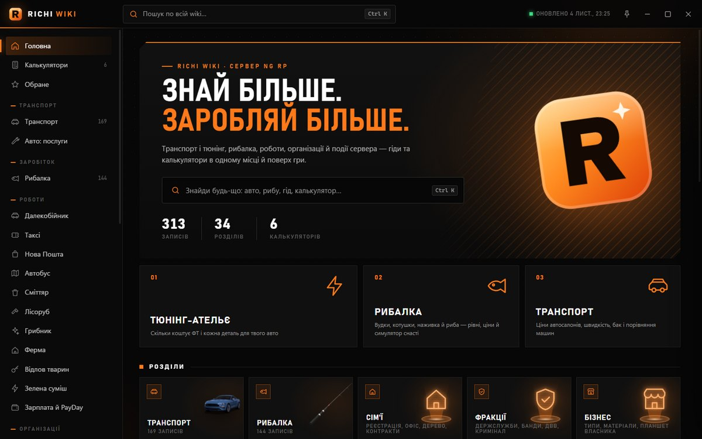
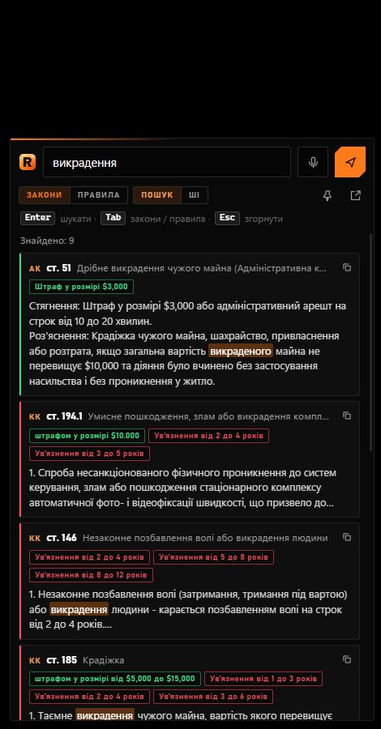
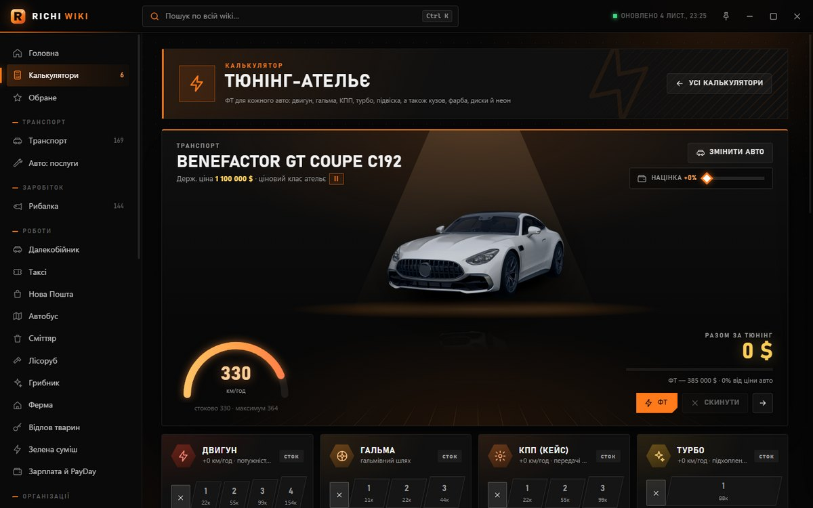
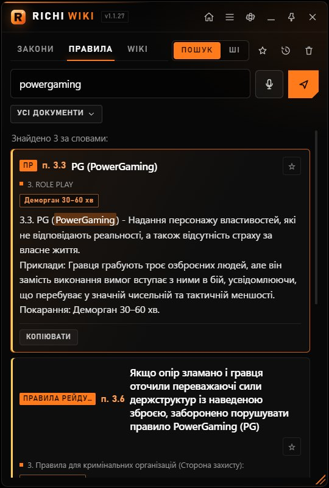
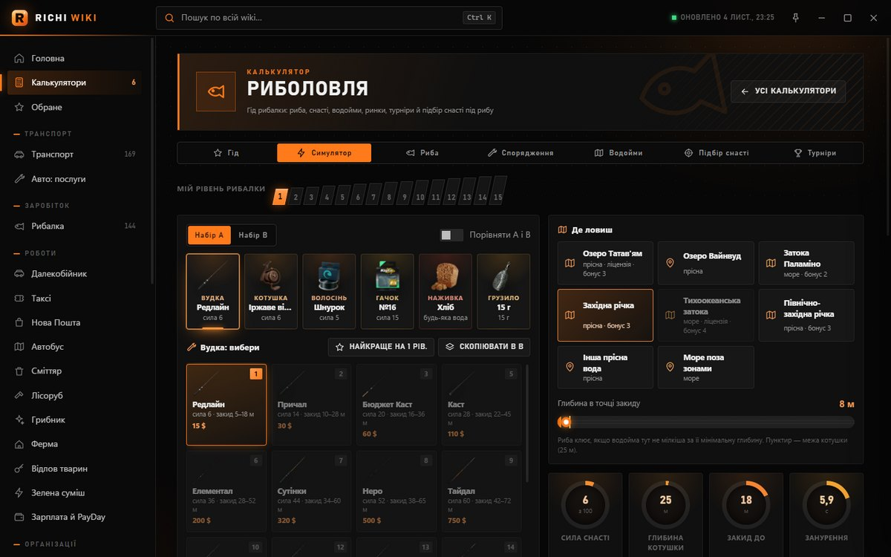
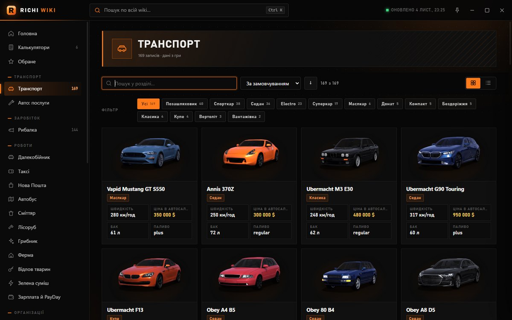
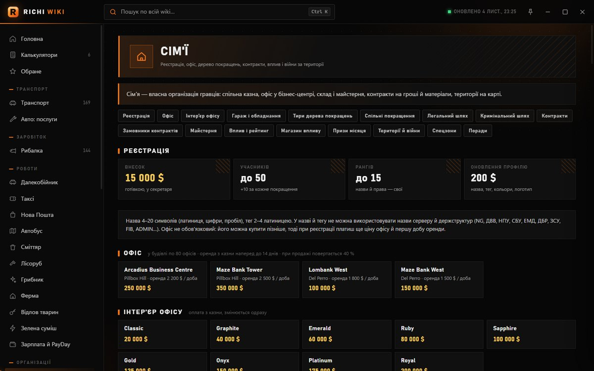

Закони й правила сервера, ШІ-юрист, помічник збоку екрана й wiki з транспортом, тюнінгом, рибалкою та гідами. Відкривається поверх гри, і з неї виходити не треба.


Без вкладок браузера й пошуку по форуму. Одне вікно поверх GTA і все під рукою.
Конституція, кодекси й закони штату NG. Програма сама підтягує їх із сайту сервера, без входу в акаунт.
Загальні правила, правила держорганізацій, крайму, лідерів і допитів з покараннями.
За номером (1.5 ТК) або словами. Без ШІ й без ліміту, з підсвіткою і штрафом чи терміном одразу в картці.
Описуєш ситуацію своїми словами й отримуєш вердикт, статті, правила й що робити далі. 50 запитів на день безкоштовно.
Язичок біля краю екрана: навів, написав, побачив статтю. Мишку прибрав, і він згорнувся, а гра знову у фокусі.
Затисни мікрофон і скажи питання. Відпустив, і запит уже пішов.
Транспорт з цінами автосалонів, рибалка, роботи, сім'ї, фракції, бізнес і події сервера.
Тюнінг-ательє, контейнери порту, підбір авто, симулятор снасті, журнал угод і таймери.
Вікно закріплюється поверх GTA, а кліки проходять крізь нього, тож гра не втрачає фокус.
Програма сама перевіряє сайт і показує «було → стало», а ще надсилає сповіщення Windows.
Усе керування з клавіатури, і кожну клавішу можна змінити.
Нові версії приходять самі, нічого перевстановлювати не треба.

Відкривається вкладкою в програмі або великим вікном (Ctrl+Alt+W). Пошук по всьому з Ctrl+K.
ШІ спирається на закони й правила сервера та посилається на конкретні статті. Він не відповідає питанням на питання, а відразу каже, як є.

NG-Helper-Setup.exe з цієї сторінки. Це офіційний інсталятор Richi Wiki.
Встановлення займає кілька секунд. Ярлик «Richi Wiki» з'явиться на робочому столі.
Закони й правила завантажаться самі. Відкривай вікно клавішею Ctrl+Alt+N.
Кожну клавішу можна змінити в Налаштування → Клавіші.



Ні. Richi Wiki — окрема програма-довідник: вона не втручається в гру, не читає її пам'ять і нічого не змінює в GTA. Це як відкрити сайт з законами, тільки зручніше.
Так. Пошук, Wiki й калькулятори без обмежень. ШІ дає 50 безкоштовних запитів на день, залишок видно в рядку статусу.
Ні. Закони й правила програма завантажує сама, без логіна й пароля.
Так, це та сама програма. Якщо NG Helper уже встановлений, він сам оновиться до Richi Wiki, і налаштування та шпаргалка збережуться.
Перемкни GTA в режим «У вікні без рамки» (Borderless) у налаштуваннях графіки. Якщо гаряча клавіша не працює, її могла зайняти інша програма (Discord, NVIDIA, OBS): зміни її в Налаштування → Клавіші.
Нічого робити не треба: програма сама запропонує оновитися, коли вийде нова версія.